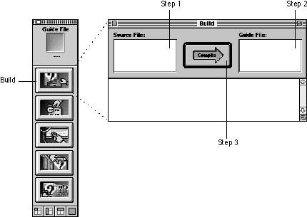
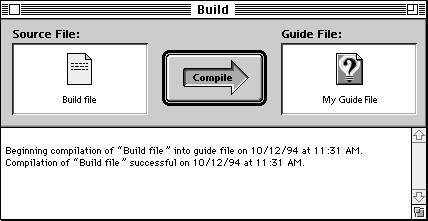

Legacy Document
Important: The information in this document is obsolete and should not be used for new development.
Important: The information in this document is obsolete and should not be used for new development.


Building Your Guide File in Four Steps
To build a guide file is a four-step process using Guide Maker's Build utility. Figure 5-2 illustrates the Build window (Guide Maker's building interface). Note that the steps in the illustration refer to the first three steps of the build process.Figure 5-2 Building your guide file using Guide Maker's Build utility

To build your guide file, follow these four steps:
Figure 5-3 A successfully compiled guide file
- Select the source file to compile.
Click in the Source File area of the Build window (see Figure 5-2); a standard file dialog box appears, requesting that you select the source file to compile. Select your build file. When you compile your build file, Guide Maker merges all of your help content together and writes it to your guide file. If you don't have a build file (that is, if your help content is described in only one source file) then select that source file as the file to compile.
- Select the guide file.
Click in the Guide File area of the Build window (see Figure 5-2); a dialog box appears, requesting that you create a new guide file or select an existing one.
If you have never built a guide file before, or if you want to build another version of your guide file, click the "Create a new guide file" radio button and then name the new guide file. A new guide file is empty, meaning that it does not contain any help content. When you build with a new guide file, you simply add your help content to this previously empty guide file.
If you want to override the help content in an existing guide file, click the "Open an existing guide file" radio button and then select the guide file. When you build with an existing guide file, you override the previous content in the guide file with the content specified in the current source files.
- Click the Compile arrow.
Guide Maker begins to compile your source files, reporting status and error messages in the status area of the Build window. Figure 5-3 shows the messages reported by Guide Maker after a successful compile.

Congratulations! By following the build steps, you have just created a guide file. To make the created guide file available for your application, place it (or an alias to it) in the same folder as the application.
- Save the guide file.
After you have successfully compiled your source files into a guide file, choose Save from the File menu to save it. (To automate this step, see the next section.)